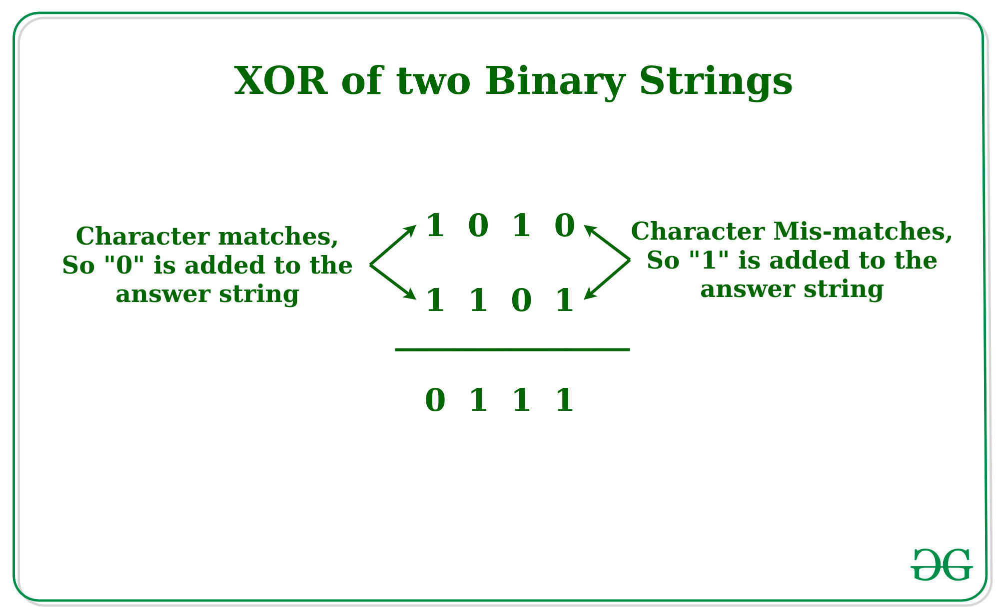

What is this website?
This website uses the Exclusive Or logic gate (Xor) to encrypt comments or posts generated by users, using any 256 bit key of their choice.
How does Xor work?
Xor is a simple logic gate that creates a binary output from two binary inputs. The two input strings are compared character by character - If the two input strings have the same value, a 0 is generated. If the two inputs have a different value, a 1 is generated. Below is a descriptive graphic by geeksforgeeks.org/ demonstrating this logic gate.
How does this website use Xor to encrypt content?
Both messages and keys are contained in 256 bits, or 64 characters. Keys utilize the SHA256 hash function to get consistent cryptographically secure outputs regaurdless of what the user types in. Messages are padded with random letters to make sure that their length always equals 64 characters, and are Xored with the 64 character SHA256 hash of the chosen key. This website styles these inputs in the browser, but the content that is used looks like the example below.
User message:
Hello, here is an example message.
-------
User key:
Here is an example key
-------
64 character message with padding letters:
QPrJSuIcrZRZqzfOIwwZnWwgqOoI|Hello, here is an example message.|
-------
64 character SHA256 hash of key:
51cc40047e7d5476fcab371037b385a86ce5e64cbe7ebc2a11bb271d8db08558
These text values are converted into numbers, and then Xored together to produce cipher text. Doing this enables cipher text to be public, and only by Xoring it with the key it was generated with will produce the origional message.
Who is this website for?
This website is for people interested in ciphers, secrets, and encryption. Users should be aware that the encryption methods used by this site are designed to protect information from all common individuals, but there are far more secure methods and services for people who desire high levels of information security. For individuals whose top priority is security, and not the interactivity or avaliability of content on this site, it is recommended individuals use AES Encryption, which was developed by the NSA and is military grade.
*Disclaimer*
This website is not to be used for criminal activity. This website should not be used to store password data, financial data, or any sensitive records. While Xor encryption is strong in a vacuum, government authorities or advanced cyber security professionals could make use of keyloggers, surveillance, inference, endpoint breaches, etc. to obtain sensitive information. While these methods do require quite a bit of effort, they are not impossible.